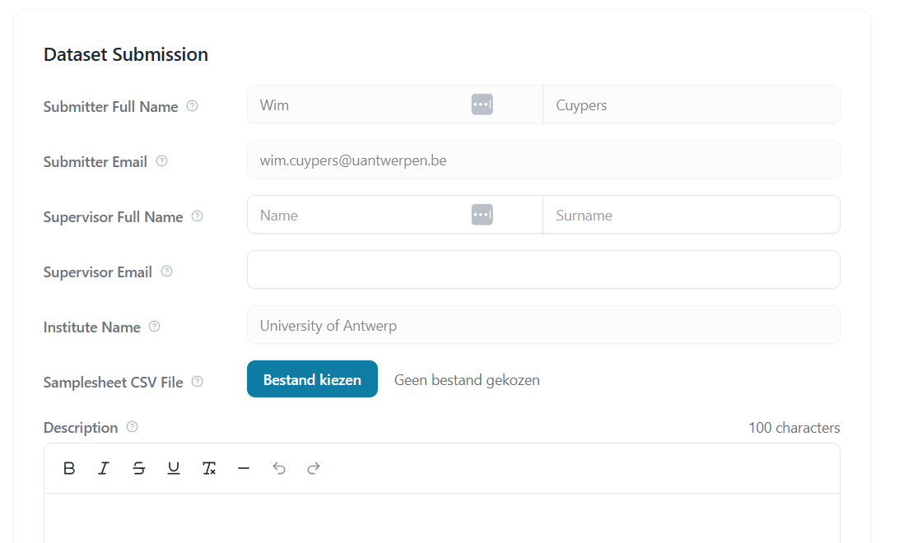
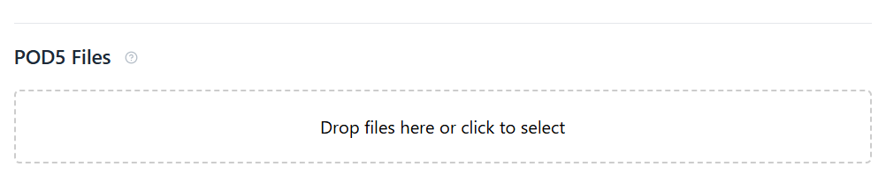

Uploading data to SquiDBase
Before uploading data to SquiDBase, you need to create an account. This ensures that each dataset is linked to a submitter and a principal investigator (PI) or responsible person.
You can sign up directly here or visit the SquiDBase website, click "Sign in" in the top-right corner, and select "Sign up here".
Checklist before upload
Before proceeding with your upload, please ensure that your data meets the following requirements:
- The data must be of microbial or viral origin and must not contain human data to comply with privacy regulations. Metadata must also be free of patient-identifiable information.
- Each upload should originate from a single Nanopore sequencing chemistry. This information is automatically extracted from your POD5 files during upload.
- Metadata should be as complete as possible. Once uploaded, metadata cannot be modified, except for the info field, which remains editable.
Once your data meets these criteria, you have two options:
1. If each POD5 file contains only one biological species, you can proceed with the upload process filtered data.
2. Alternatively, if your dataset contains a mix of viral or microbial species, you can filter out POD5 reads per species using SquiDPipe, a dedicated pipeline designed for this purpose. These steps are explained under upload process mixed data
Upload when data is already filtered
If your data has already been filtered (i.e., each POD5 file contains reads from only one microbial or viral species), you only need to upload:
- The POD5 files
- A CSV file with the corresponding metadata
Metadata CSV File Format
Each dataset uploaded to SquiDBase must be accompanied by a metadata/samplesheet CSV file. This file provides essential information about the samples and ensures proper indexing and retrieval.
Recent Updates: SquiDBase now includes three new metadata fields to provide more detailed information about sequencing protocols:
- Library Source (library_source_id) - Source material type
- DNA Input Type (dna_input_type_id) - Sample preparation method
- Target Scope (target_scope_id) - Sequencing strategy
These fields are optional for existing users but recommended for new submissions to enhance data discoverability and reuse.
General guidelines:
- The metadata file should be in CSV format (
.csv). - Missing values should be filled with "NA" (not left empty).
- Both comma (
,) and semicolon (;) delimiters are accepted. - Each row in the file represents one POD5 file and its corresponding metadata.
- Metadata cannot be modified after upload, except for the
remarksfield.
Metadata Fields
The table below details the required fields in the metadata file, including their descriptions, expected data types, and example values.
| Column Name | Description | Data Type | Example Value |
|---|---|---|---|
filename |
The filename of the POD5 sequencing data to be uploaded. | String | 37124_CHIKV-1.pod5 |
species_taxid |
NCBI taxonomy identifier for the microbial species in the sample. | NCBI taxonomy | 37124 |
year_of_isolation |
The year the pathogen or microbial/viral species was isolated. | Integer | 2014 |
country_of_isolation |
The ISO 3166 country code indicating where the pathogen was isolated. | ISO 3166 country code | BE |
geographic_origin |
The geographic origin of the pathogen, if available. Can differ from country_of_isolation (e.g., in cases of imported infections). |
ISO 3166 country code | ET |
strain_lineage |
The specific strain, lineage, or sequence type of the uploaded pathogen data. | String | BA.5 |
source_id |
A unique identifier for the source of the pathogen sample, using the UBERON ontology. | UBERON ontology | UBERON:_0000178 |
host_taxid |
NCBI taxonomy identifier for the host species from which the pathogen was isolated, if applicable. | NCBI taxonomy | 9606 |
internal_lab_id |
Internal identification code assigned to the sample by the laboratory. | String | PLAS-ETH-2023-0147 |
diagnostic_method_id |
The diagnostic method used to detect the pathogen, using the OBI ontology. | OBI ontology | OBI:_0003045 |
library_source_id |
Describes the source material of the DNA/RNA being sequenced. Options include: genomic, single_cell_genomic, transcriptomic, single_cell_transcriptomic, metagenomic, viral_rna, plasmid, other. | Controlled vocabulary | viral_rna |
dna_input_type_id |
Describes how the DNA/RNA was prepared or amplified before sequencing. Options include: native, pcr, amplicon, random_pcr, rt_pcr, cDNA, swga, mda, hybrid_capture, probe_capture, chip, other. | Controlled vocabulary | rt_pcr |
target_scope_id |
Describes the sequencing strategy or what part of the genome is targeted. Options include: whole_genome, whole_genome_wga, amplicon, exome, transcriptome, small_rna, chip, targeted, plasmid, other. | Controlled vocabulary | whole_genome |
remarks |
Additional notes or remarks about the sample, often for internal collection records. | Text field | "Strain donated by institute X." |
New Metadata Fields - Detailed Information
Library Source (library_source_id)
This field describes the source material of the DNA/RNA being sequenced:
genomic- DNA extracted from genomic material of an organismsingle_cell_genomic- DNA extracted from a single celltranscriptomic- RNA converted to cDNA for sequencingsingle_cell_transcriptomic- RNA converted to cDNA from a single cellmetagenomic- DNA extracted from a mixed community of organismsviral_rna- Viral RNA genome, sequenced as cDNAplasmid- Circular plasmid DNA sequenced separatelyother- Source material not covered by the above categories
DNA Input Type (dna_input_type_id)
This field describes how the DNA/RNA was prepared or amplified before sequencing:
native- Genomic DNA sequenced without amplificationpcr- DNA amplified by PCR without specific locus targetingamplicon- PCR amplicons targeting specific locirandom_pcr- Random priming followed by PCR amplificationrt_pcr- Reverse transcription followed by PCR amplification of RNAcDNA- Complementary DNA synthesized from RNAswga- Selective whole-genome amplification of microbial DNAmda- Multiple displacement amplificationhybrid_capture- Target enrichment via hybridization probesprobe_capture- Probe-based capture of targeted sequenceschip- DNA fragments enriched by chromatin immunoprecipitationother- Selection method not covered above
Target Scope (target_scope_id)
This field describes the sequencing strategy or what part of the genome is targeted:
whole_genome- Random sequencing across the entire genomewhole_genome_wga- Whole-genome sequencing after amplificationamplicon- Sequencing of PCR ampliconsexome- Sequencing of captured exonstranscriptome- Sequencing of cDNA from RNAsmall_rna- Sequencing of small RNAs such as miRNAchip- Sequencing of DNA fragments from ChIP enrichmenttargeted- Sequencing of enriched panels or probe-captured regionsplasmid- Sequencing focused on plasmids or small repliconsother- Strategy not covered above
A template CSV file is available for download: Download Template.
Example Metadata Format
| filename | species_name | species_taxid | year_of_isolation | country_of_isolation | geographic_origin | strain_lineage | source_id | host_taxid | internal_lab_id | diagnostic_method_id | library_source_id | dna_input_type_id | target_scope_id | remarks |
|---|---|---|---|---|---|---|---|---|---|---|---|---|---|---|
| file1.pod5 | DENV | 11053 | 2014 | NA | NA | ECSA | NA | NA | NA | NA | viral_rna | rt_pcr | transcriptome | ITM collection |
| file2.pod5 | HIV | 11676 | 2015 | BE | NI | ECSA | NA | NA | NA | NA | viral_rna | rt_pcr | whole_genome | ITM collection |
| file3.pod5 | ZIKV | 64320 | 11053 | 2015 | BE | ID | NA | NA | NA | NA | viral_rna | cDNA | transcriptome | NA |
| file4.pod5 | SARS-CoV-2_A | 2697049 | 11060 | 2018 | BE | PE | NA | NA | NA | NA | viral_rna | rt_pcr | whole_genome | NA |
| file5.pod5 | SARS-CoV-2_B | 2697049 | 11060 | 2018 | BE | PE | NA | NA | NA | NA | genomic | native | whole_genome | NA |
Upload Interface in SquiDBase
After logging in to SquiDBase, you can access the Submit page.
On this page, you will need to:
1. Fill in your contact details
2. Provide a short description of your dataset
3. Upload a Samplesheet CSV file containing metadata for your POD5 files

Dataset submission page in SquiDBase.
Uploading POD5 Files
Below the metadata submission section, you will find an area to upload your POD5 files, as shown in the image below.
Once both the CSV metadata file and the POD5 files are uploaded, SquiDBase will perform basic validation checks, such as:
- Ensuring that all filenames in the CSV match the uploaded POD5 files
- Checking for potential formatting issues
If no errors are detected, you can proceed by clicking the Upload button.

POD5 upload section.
Making Your Data Public
Once your data is uploaded, you will have the option to:
- Immediately make your dataset publicly available
- Keep the dataset private and enable the "public" toggle later when you are ready to share it (e.g., after your publication is under peer review)
Upload of mixed datasets – running SquiDPipe
Many Nanopore sequencing runs, particularly those involving barcoded samples with multiple microbial or viral species, contain mixed species per POD5 file.
To handle this, use SquiDPipe, a Nextflow pipeline designed to process barcoded runs, including FASTQ files. It will:
- Classify reads based on the basecalled sequences
- Automatically separate POD5 files by species
- Output a CSV for uploading to SquiDBase that matches the outputted POD5 filenames
For instructions on running SquiDPipe, visit:
SquiDPipe GitHub Repository